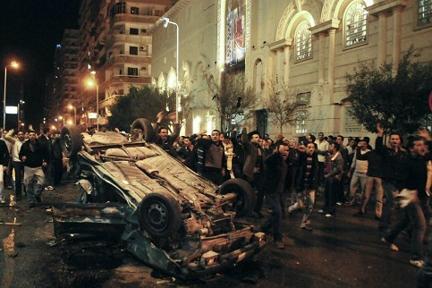

14 3. Das Massaker von Alexandria Nach: http://www.welt.de/politik/ausland/article11919257/Anschlag-auf-aegyptische-Christen-21-Menschen- tot.html In der ägyptischen Stadt Alexandria kamen bei einem Anschlag auf koptische Christen in der Neujahrsnacht 2010/2011 mindestens 21 Menschen ums Leben, als sie nach einer Mitternachtsmesse, an der ca. 1000 Menschen teilgenommen hatten, aus der Kirche strömten und ein Sprengsatz detonierte. Neben den Toten gab es zahlreiche schwer Verletzte. Augenzeugen berichteten von Menschen, die in Flammen standen und von in weitem Umkreis umherliegenden Leichen sowie den Trümmern eines Autos, in dem möglicherweise Sprengstoff oder eine Bombe platziert worden war. Zunächst bekannte sich niemand zu dem Anschlag. Der Gouverneur von Alexandria gab umgehend dem Terrornetzwerk Al-Qaida die Schuld an der Tat, möglicherweise, um die Spannungen zwischen Christen und Muslimen im eigenen Land herunterzuspielen. Al-Qaida habe mit Angriffen auf Kirchen in Ägypten gedroht, sagte er im ägyptischen Staatsfernsehen. Bis heute ist die Identität der Täter nicht geklärt, obwohl Gerüchte kursieren, dass die Tat durch hochrangige Persönlichkeiten des Landes angeordnet worden war. Die Kopten sind die größte christliche Glaubensgemeinschaft im Nahen Osten. Sie machen bis zu zehn Prozent der über 80 Millionen Einwohner im überwiegend muslimischen Ägypten aus und sind im Alltag Diskriminierungen und Benachteiligungen ausgesetzt. Foto: AP/DAPD Blutige Silvesternacht in Alexandria
St. Markus · 2015 · Deutsch
ـ كلمة قداسة البابا فى تأبين الشهداء
Ausgabe 1 · Seite 14
